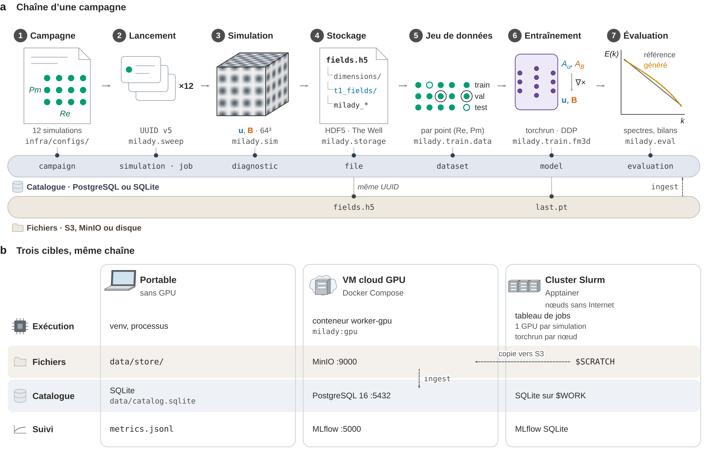

Calcul et données
Passer des expériences sur processeur aux campagnes 3D : format de données, catalogue des résultats, déploiement sur une VM cloud ou un cluster Slurm
Les expériences du rapport tiennent sur un processeur ordinaire. Le plan de thèse demande davantage : des campagnes de dizaines à centaines de simulations 3D, des entraînements sur GPU, et une trace de chaque résultat. Cette page décrit l’infrastructure prête à l’emploi du dépôt : le paquet Python milady et le dossier infra/. On loue une machine, on fait git clone, et une commande installe tout.
Ce qui est testé Toute la chaîne a tourné de bout en bout sur une machine sans GPU (portable, pile Docker complète, gabarits Slurm exécutés avec un ordonnanceur simulé) : la suite de 68 tests automatiques passe (66 réussis et 1 sauté lors de la mesure avec PostgreSQL et MinIO ; le test de l’ancrage, ajouté depuis, passe aussi). N’ont pas pu être exécutés : une carte GPU, un vrai cluster Slurm, Apptainer et une VM louée chez un fournisseur. La dernière section détaille ce qui a été vérifié et ce qui reste à vérifier sur place.
Démarrer
Trois cibles partagent le même code, des dépendances épinglées et le même format de données ; la VM et le cluster utilisent en outre la même image logicielle.
| Cible | Pour quoi | Commande principale |
|---|---|---|
| A. VM cloud avec GPU, louée à l’heure | campagnes 3D et entraînements, sans centre de calcul | sudo infra/deploy/bootstrap_vm.sh |
| B. Cluster Slurm (Jean Zay, mésocentre) | grosses campagnes, entraînement sur plusieurs nœuds | python -m milady.sweep … --scheduler slurm |
| C. Portable, sans GPU | développement, tests, petites grilles | make setup && make smoke |
Sur une VM cloud. Créer une VM Ubuntu 22.04 ou 24.04, de préférence avec l’image « GPU » du fournisseur (pilote NVIDIA préinstallé), un disque de 100 à 200 Go et un pare-feu qui n’ouvre que SSH. Puis :
ssh ubuntu@IP_DE_LA_VM
git clone https://github.com/knoel99/milady-2027.git && cd milady-2027
sudo infra/deploy/bootstrap_vm.shLe script, relançable sans risque, installe Docker et, si un GPU est présent, le NVIDIA Container Toolkit ; il génère des mots de passe aléatoires dans un fichier .env jamais versionné ; il construit l’image (milady:gpu, CUDA 12.6, ou milady:cpu) ; il démarre la base PostgreSQL, le stockage objet MinIO et le serveur MLflow ; enfin, il lance un test de bout en bout (simulation 3D minuscule, fichier, catalogue, une itération d’entraînement, évaluation). Durée mesurée sans GPU, Docker étant déjà installé : 3 minutes, dont la construction de l’image. On peut aussi passer le fichier infra/deploy/cloud-init.yaml à la création de la VM, sans s’y connecter, ou déployer depuis son portable avec infra/deploy/deploy_remote.sh ubuntu@IP.
Ensuite, depuis la VM :
make sweep CONFIG=infra/configs/palier2_abc3d.yaml # campagne de simulations
make train CONFIG=infra/configs/train_fm3d.yaml # entraînement (tous les GPU, torchrun)
make eval CONFIG=infra/configs/train_fm3d.yaml # évaluation, résultats au catalogueLes interfaces web (MLflow, console MinIO, JupyterLab) n’écoutent que sur la VM : on y accède par un tunnel SSH, ssh -N -L 5000:localhost:5000 -L 9001:localhost:9001 -L 8888:localhost:8888 ubuntu@IP.
Sur un cluster Slurm. L’image GPU est convertie en image Apptainer (make image-gpu && make sif), puis copiée sur le cluster. Chaque simulation d’une campagne est un élément d’un tableau de jobs (un GPU chacun) ; l’entraînement lance un torchrun par nœud. Les nœuds de calcul de Jean Zay n’ont pas d’accès à Internet : le catalogue est alors un fichier SQLite sur $WORK ; les simulations sont ensuite enregistrées dans la base centrale à partir de leurs fichiers MFF (python -m milady.catalog ingest), sous les mêmes identifiants. Les modèles, évaluations et tâches du catalogue SQLite ne sont pas transférés par cette commande. Le guide README-slurm.md donne les options propres à Jean Zay, vérifiées dans la documentation de l’IDRIS.
Sur un portable. make setup crée un environnement virtuel avec les versions épinglées (68 s mesurées), et make smoke RUN=local fait le même test de bout en bout avec un catalogue SQLite et des fichiers locaux (4 s).
La chaîne de traitement
Une campagne décrite dans un fichier YAML devient des simulations, puis des fichiers, puis un jeu de données, des modèles et des évaluations. Chaque étape écrit sa trace dans le catalogue sous un identifiant unique (UUID) ; les simulations, leurs fichiers et les modèles portent en plus le commit du code (suffixe -dirty si l’arbre de travail était modifié).

palier2_tg3d : 4 × 3 points (Re, Pm), grille 64^3) traverse sept modules ; chaque étape écrit sa trace au catalogue, les champs et les points de contrôle vont au stockage objet, et la simulation porte le même UUID dans son fichier et au catalogue, si bien que la partie simulations du catalogue se reconstruit à partir des fichiers (ingest). Le découpage de l’étape 5 suit train_fm3d.yaml (validation Re = 100, Pm = 1 ; test Re = 50, Pm = 2) ; le spectre de l’étape 7 est illustratif. b, Les mêmes rôles sur trois cibles ; sur le cluster, dont les nœuds n’ont pas Internet, les fichiers sont copiés vers le stockage S3 puis ingérés dans PostgreSQL, les modèles et évaluations restant dans le SQLite du cluster. Schéma dessiné avec la skill schematic-figure ; sources dans figures/architecture/.| Étape | Module | Ce qui est produit | Où c’est enregistré |
|---|---|---|---|
| 1. Campagne | fichier YAML de infra/configs/ |
grille de paramètres physiques (Re, Rm, Pm…) | table campaign (YAML du premier lancement ; chaque lancement en garde une copie figée dans data/sweeps/) |
| 2. Lancement | milady.sweep |
une tâche par point de la grille : en local, un processus par simulation ; avec Docker, un conteneur par simulation ; sur un cluster, un tableau de jobs Slurm | tables simulation et job |
| 3. Simulation | milady.sim (solveur MHD 3D, PyTorch) |
champs (\mathbf{u}, \mathbf{B}) et diagnostics | fichier MFF ; table diagnostic |
| 4. Stockage | milady.storage |
fichier {campagne}/{uuid}/fields.h5, jamais modifié en usage normal (--force le réécrit, et sa somme SHA-256 est alors mise à jour au catalogue), sur S3, MinIO ou disque |
table file (somme SHA-256, taille) |
| 5. Jeu de données | milady.train.data (au premier entraînement, selon data.auto_dataset ; stocké par milady.catalog) |
sélection des simulations et découpage entraînement, validation, test | tables dataset et dataset_member |
| 6. Entraînement | milady.train.fm3d |
flow matching conditionnel à potentiels vecteurs ; points de contrôle | table model ; MLflow (courbes, hyperparamètres) |
| 7. Évaluation | milady.eval |
métriques statistiques et physiques des champs générés | table evaluation ; vue v_eval_summary |
Comme la simulation porte le même UUID dans le fichier et au catalogue, la partie simulations du catalogue (simulations, fichiers, diagnostics) peut être reconstruite ou fusionnée à partir des seuls fichiers (paramètres, code, commit, fichier, diagnostics ; le nom de campagne se donne avec --campaign, et la durée de calcul, les ressources et le YAML de la campagne ne sont pas restitués) ; les jeux de données, modèles et évaluations, eux, n’existent qu’au catalogue. C’est ce qui permet de travailler sur un cluster sans réseau.
Le schéma interactif suivant parcourt la même chaîne cible par cible : choisissez une cible, puis cliquez une étape pour voir ce qu’elle fait, ce qu’elle écrit et la commande exacte sur cette cible.
Le format de données
Chaque simulation produit un fichier au format MFF (MilaDy Field Format) : un fichier HDF5 qui suit exactement la convention de The Well (Ohana et al., NeurIPS 2024), la collection de référence de simulations physiques pour l’apprentissage, et y ajoute des métadonnées préfixées milady_.
fields.h5
├── attributs : dataset_name, grid_type, n_spatial_dims, n_trajectories, simulation_parameters…
│ milady_uuid, milady_code, milady_git_commit, milady_parameters (JSON)…
├── dimensions/ time, x, y, z
├── boundary_conditions/ conditions périodiques par axe
├── scalars/ paramètres physiques (Re, Rm, Pm…)
├── t0_fields/ champs scalaires
├── t1_fields/ u, B : (trajectoires, temps, x, y, z, composantes)
├── milady_diagnostics/ énergies, dissipations, hélicités, taux de croissance, max |∇·u|, max |∇·B|
└── milady_spectral/ coefficients de Fourier des champs (domaines périodiques, facultatif)Suivre The Well rend les données lisibles par les chargeurs et les modèles de référence de la communauté : nous avons vérifié, en rejouant les accès HDF5 du chargeur WellDataset (the_well 1.2.0) sans exécuter le paquet lui-même, qu’un fichier MFF 3D est relu à l’identique. Les attributs milady_* sont invisibles pour un lecteur The Well et validés par un schéma JSON. Une variante Zarr, de même hiérarchie, permet de lire un morceau d’un fichier sur S3 sans le télécharger. Une extension est prévue pour les sorties de SFEMaNS (modes de Fourier azimutaux sur un maillage d’éléments finis méridien), sans interpolation destructive. La fonction de validation détecte les fichiers corrompus : les 18 corruptions testées (types, formes, valeurs non finies, identifiants…) sont toutes signalées, un NaN au milieu d’une trajectoire seulement par la vérification complète (validate --full). Spécification complète : docs/specs/format-donnees.md. La figure 2, dans la section sur le solveur, relie chaque partie du fichier à sa colonne du catalogue.
Le catalogue des résultats
Les résultats d’une thèse sont relationnels : campagne, simulations, fichiers, jeux de données, modèles, évaluations. Ils sont rangés dans une base PostgreSQL (en local ou sur la VM), ou dans un fichier SQLite de même schéma sur un portable ou un cluster sans réseau.
| Table | Contenu |
|---|---|
campaign |
nom, description, configuration YAML complète |
simulation |
paramètres physiques (JSON indexé), statut, machine, GPU et cœurs, durée, commit du code |
file |
URI, somme SHA-256, taille, nombre d’instantanés |
diagnostic |
séries temporelles des diagnostics physiques |
dataset, dataset_member |
jeux de données versionnés et leur découpage |
model |
hyperparamètres, jeu de données, run MLflow, point de contrôle, commit |
evaluation |
métrique, valeur, paramètres, graine, nombre d’échantillons |
job |
identifiant de l’ordonnanceur (Slurm, Docker), statut, journaux |
On interroge le catalogue en SQL ou en ligne de commande. Par exemple, les heures de calcul par campagne (des heures GPU seulement si chaque simulation a eu son propre GPU, comme dans un tableau Slurm ; sur une VM, make sweep fait tourner jusqu’à resources.max_parallel simulations à la fois sur le même GPU) :
SELECT c.name, round(CAST(sum(s.wall_time_s * CASE WHEN s.n_gpus > 1 THEN s.n_gpus ELSE 1 END) / 3600.0 AS NUMERIC), 1) AS heures_gpu
FROM simulation s JOIN campaign c ON c.id = s.campaign_id
WHERE s.status = 'done' GROUP BY c.name ORDER BY heures_gpu DESC;et, en ligne de commande, python -m milady.catalog sims --campaign palier2_abc3d --param Rm__gt=8 liste les simulations d’une campagne au-dessus d’un seuil. Les fichiers lourds vivent dans un stockage objet à l’API S3 : MinIO sur la VM, ou un bucket du fournisseur pour qu’ils survivent à la suppression de la VM. Les entraînements sont suivis par MLflow, auto-hébergé, relié au catalogue par l’identifiant de run.
Le solveur, les campagnes et l’entraînement
Solveur. milady.sim.mhd3d résout la MHD incompressible 3D périodique par une méthode pseudo-spectrale en PyTorch, sur processeur ou GPU : Runge–Kutta d’ordre 4 à facteur intégrant, désaliasage par la règle des 2/3, projection de Leray de \mathbf{u} et de \mathbf{B}, si bien que les deux divergences restent à la précision machine. Il a deux modes : dynamique (Navier–Stokes et induction couplées, forçage ABC, Taylor–Green ou aléatoire) et cinématique (écoulement imposé, comme dans l’expérience E3). Plusieurs trajectoires avancent ensemble sur le même GPU. Le bilan d’énergie \mathrm{d}(E_u + E_B)/\mathrm{d}t = \text{injection} - \nu\langle|\boldsymbol\omega|^2\rangle - \eta\langle|\mathbf{j}|^2\rangle est vérifié par les tests. Sur le processeur de développement, un pas prend 0,08 s à 64^3 en mode dynamique (2 fils) ; aucun temps GPU n’est donné, faute de GPU, et la commande python -m milady.sim.mhd3d bench --device cuda le mesure sur place.
![Trois panneaux. En haut, une boucle entre l'espace de Fourier, à gauche, et l'espace physique, à droite : état spectral, rotationnels, transformée inverse, produits, transformée directe, désaliasage, projection de Leray et rotationnel, puis RK4 de Lawson qui revient à l'état. En bas à gauche, une frise du temps simulé de 0 à 140 avec diagnostics continus, 40 instantanés entre 100 et 140, points de contrôle et une interruption suivie d'une reprise. En bas à droite, l'arbre d'un fichier HDF5 relié à trois tables du catalogue.](../figures/solveur/figure/out/solveur.png)
milady.sim.mhd3d : rotationnels pris en Fourier, produits \mathbf{u}\times\boldsymbol{\omega} + \mathbf{j}\times\mathbf{B} et \mathbf{u}\times\mathbf{B} en espace physique, retour en Fourier, désaliasage 2/3, projection de Leray du terme de quantité de mouvement, rotationnel du terme d’induction ; le RK4 de Lawson intègre exactement la diffusion, avec quatre évaluations du second membre par pas. Les plans de modes sont une image à 11 points par direction (coupure réelle |m| \le 21 à 64^3). b, Une simulation de palier2_tg3d dans le temps : diagnostics depuis t = 0, 40 instantanés sur la fenêtre gardée, points de contrôle et reprise après SIGTERM (position d’exemple). c, Le fichier MFF suit la convention de The Well (en gris) et y ajoute des attributs et groupes milady_* ; l’identifiant, les paramètres, le commit et les diagnostics ont leur colonne au catalogue.Campagnes prêtes. Elles préparent les paliers du plan de thèse à échelle réduite : palier1_mhd2d reprend le jeu de E2 (32^2, \nu fixé, 11 valeurs de \eta), pas encore le plan 128^2 sur une grille 8 × 8 en (\nu, \eta) ; les campagnes 3D gardent 20 à 40 instantanés par simulation, contre environ 5000 par point prévus au palier 2.
| Campagne | Contenu |
|---|---|
palier1_mhd2d |
MHD 2D forcée de l’expérience E2 : 11 valeurs de \eta, 16 trajectoires par valeur |
palier2_abc3d |
dynamo cinématique ABC à 64^3 : Rm de 4 à 40 (37 simulations), modes propres magnétiques |
palier2_tg3d |
MHD 3D forcée Taylor–Green à 64^3 : Re \in \{25, 50, 100, 200\} et Pm \in \{0{,}5 ; 1 ; 2\} (12 simulations) |
train_fm3d |
flow matching conditionnel par (Re, Pm) des champs Taylor–Green, potentiels vecteurs tronqués à |\mathbf{m}| \le 8, symétrie \mathbf{B} \to -\mathbf{B} exacte |
Entraînement. milady.train.fm3d reprend en 3D les choix validés par les expériences : potentiels vecteurs en jauge de Coulomb (divergence nulle par construction, comme la variante V4 de E2), champ de vitesse équivariant pour \mathbf{B} \to -\mathbf{B} (variante C de E1), et réglage fin facultatif par la perte de stationnarité estimée sans biais. L’expérience E1 a montré que ce réglage fin peut diverger à partir d’un modèle biaisé : on ne le lance qu’à partir d’un modèle déjà bon, avec deux garde-fous ajoutés pour cette raison (désactivés par défaut : ils valent 0 tant qu’on ne les fixe pas), un ancrage aux poids de départ (stationarity.anchor) et une montée progressive du poids \beta (stationarity.beta_warmup), et il faut surveiller la dispersion des bilans : l’écart-type des bilans par échantillon n’est pas encore calculé automatiquement, car l’évaluation n’enregistre que les résidus moyens. Le même code tourne sur un GPU ou sur plusieurs nœuds (DDP), reprend après une interruption depuis son dernier point de contrôle last.pt si on le relance sous le même nom de run (--run-name, ou --resume <uri> ; automatiquement sous Slurm seulement pour un job remis en file avec le même identifiant), et journalise dans MLflow.
Coûts
Les prix changent selon le fournisseur, la région et le mode de location : le guide ne donne aucun prix, mais une méthode.
\text{coût} \approx \sum_{\text{tâches}} \text{durée (h)} \times \text{nombre de GPU} \times \text{prix horaire de l'instance} \;+\; \text{stockage} \;+\; \text{données sortantes} .
On mesure d’abord une seule simulation représentative ; sa durée est enregistrée au catalogue et s’extrapole à la campagne. Pour la mémoire, un état (\mathbf{u}, \mathbf{B}) en simple précision occupe 6 \times N^3 \times 4 octets, soit environ 0,4 Go à 256^3 ; le pic de mémoire mesuré sur processeur vaut environ 15 fois cet état à 128^3 (717 Mo), soit environ 6 Go à 256^3 et 48 Go à 512^3 : un GPU de 24 Go suffit à 256^3, et il faut un GPU de 80 Go à 512^3 (estimation à vérifier avec nvidia-smi). Trois règles réduisent la facture : des instances interruptibles pour les tableaux de simulations, qui sont indépendantes et relançables ; une VM supprimée dès qu’elle ne sert plus, après sauvegarde (make backup) ; et les données dans un bucket plutôt que sur le disque de la VM.
Ce qui est testé, ce qui reste à vérifier
| Vérifié sur la machine de développement (sans GPU) | Durée mesurée |
|---|---|
installation portable (make setup) et test de bout en bout (make smoke RUN=local) |
68 s et 4 s |
| image Docker CPU construite à froid ; pile PostgreSQL, MinIO, MLflow saine | 2 min ; 14 s |
| test de bout en bout dans la pile Docker : objets dans MinIO, run MLflow terminé, catalogue rempli | 10 s |
installation par bootstrap_vm.sh --cpu (Docker déjà présent) sur une copie neuve du dépôt, puis relance |
3 min ; 33 s |
tests automatiques (make test), avec PostgreSQL et MinIO |
66 réussis, 1 sauté (avant l’ajout d’un 68e test, qui passe aussi) |
| gabarits Slurm exécutés avec un ordonnanceur simulé, dont l’arrêt en fin de temps et la reprise | quelques secondes |
fichier MFF relu en rejouant les accès HDF5 du chargeur de The Well ; sauvegarde produite par make backup (dumps pg_dump et miroir des buckets) |
— |
Restent à vérifier sur place, à la première location : l’image GPU complète et le NVIDIA Container Toolkit, le solveur et l’entraînement sur CUDA (et sur plusieurs GPU), un vrai Slurm avec Apptainer, l’installation de Docker sur une Ubuntu neuve, les buckets S3 des fournisseurs, et les campagnes à leur taille réelle. Le guide de déploiement (§ 11 et 12) en donne le détail.
Pour aller plus loin
- Guide de déploiement : VM cloud, portable, sauvegarde, coûts, dépannage, sécurité.
- Architecture : flux des données, choix techniques, provenance.
- Guide Slurm et Jean Zay.
- Format MFF et contrat de l’infrastructure.
- Code :
milady/, configurations :infra/configs/, tests :tests/.